En este documento presentamos las evidencias de avance del Producto Mínimo Viable (MVP) de PichangaBook Arequipa (repositorio github.com/RodrigoSierr/PichangaBook). El proyecto resuelve tres problemas al alquilar canchas sintéticas en Arequipa: las reservas duplicadas entre recepción y WhatsApp, la dificultad de cobrar la cuota a cada amigo del partido y la falta de suplentes de último minuto. Hasta la fecha hemos implementado el esquema de base de datos en PostgreSQL, el servidor backend en NestJS con Socket.io y las interfaces de usuario en HTML5/Tailwind CSS (panel web de dueños) y Flutter/Dart (aplicación móvil para jugadores).
El siguiente diagrama muestra cómo se comunican el panel web de recepción y la aplicación móvil con los módulos del backend en NestJS y la base de datos PostgreSQL mediante peticiones REST y eventos en tiempo real por WebSockets:
El modelo relacional implementado en backend-nestjs/schema.sql se compone de las siguientes entidades principales y sus relaciones de integridad referencial:
schema.sql)|
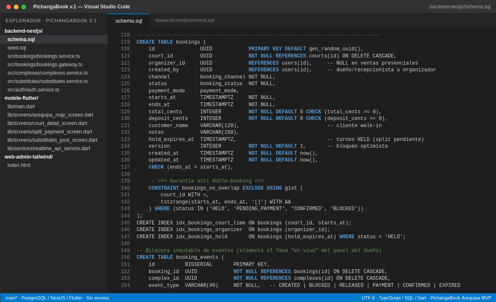 Figura 3: Código SQL de la tabla
bookings y su restricción GiST en backend-nestjs/schema.sql. |
En la captura se observa el archivo
Cada reserva guarda la cancha ( |
bookings.service.ts)|
El servicio
Como muestra la captura del código en las líneas 94 a 126, cuando un organizador elige la modalidad |
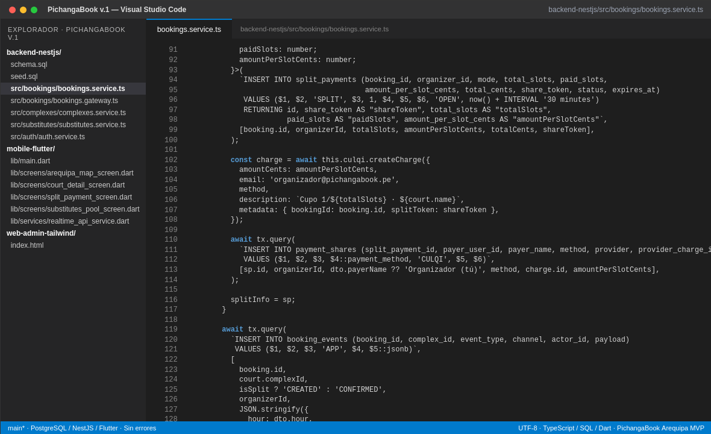 Figura 4: Transacción de reserva y creación de pago dividido en
bookings.service.ts. |
bookings.gateway.ts)|
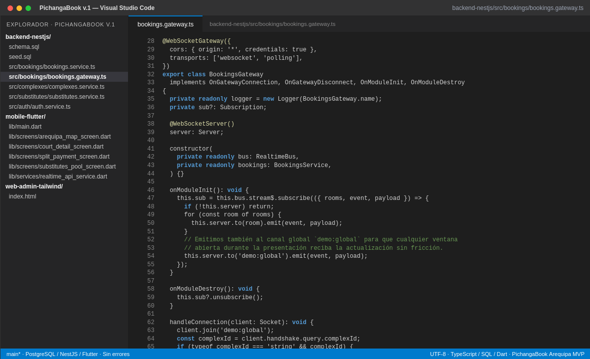 Figura 5: Implementación de
BookingsGateway con Socket.io en NestJS. |
Para que los bloqueos hechos en recepción y los abonos del pago dividido se reflejen sin recargar la página, implementamos la clase
En las líneas 46 a 65 se aprecia cómo el gateway escucha el bus interno de eventos ( |
arequipa_map_screen.dart)|
En la carpeta
La captura muestra el archivo |
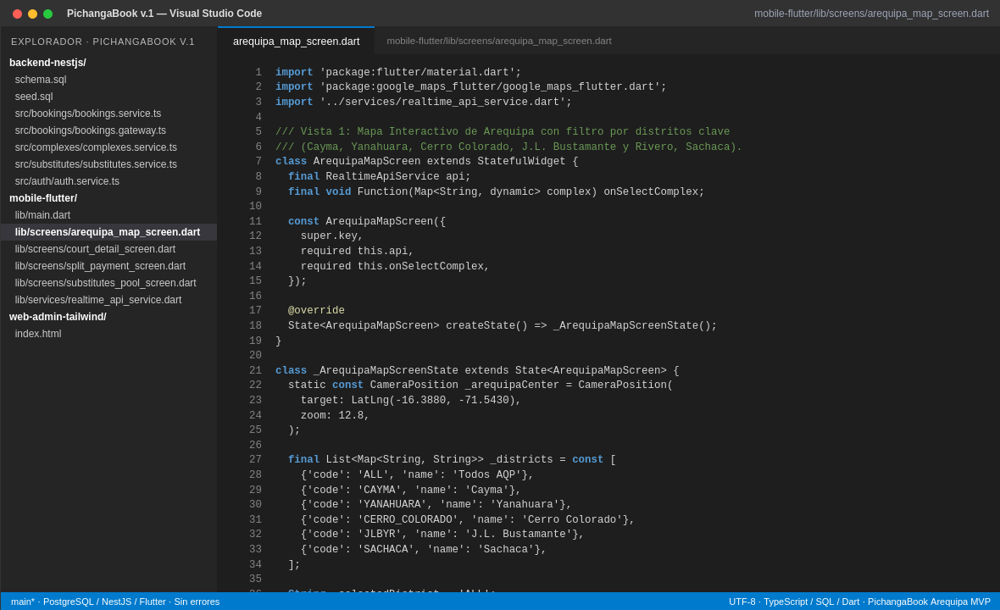 Figura 6: Código en Flutter (Dart) de la pantalla del mapa de Arequipa.
|
|
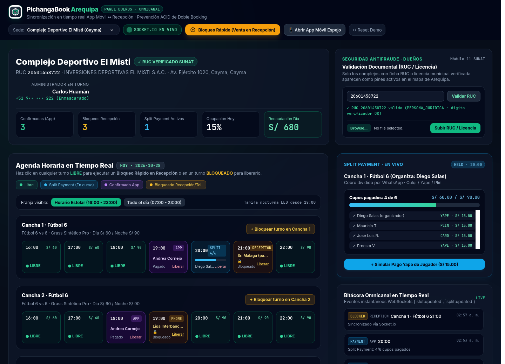 Figura 7: Panel web de administración para dueños de complejos corriendo en el navegador.
|
El panel web ( Muestra los indicadores del complejo deportivo, el validador de RUC con el algoritmo módulo 11 de SUNAT, la parrilla horaria en vivo de cada cancha y el monitor lateral de pagos divididos junto con la bitácora de eventos recibidos por WebSockets. |
|
Cuando un cliente paga en efectivo en la boletería o reserva por teléfono, el encargado abre este modal en el panel web, elige la cancha, la hora y el nombre del grupo, y pulsa “Bloquear Turno Ahora”.
La interfaz envía una petición |
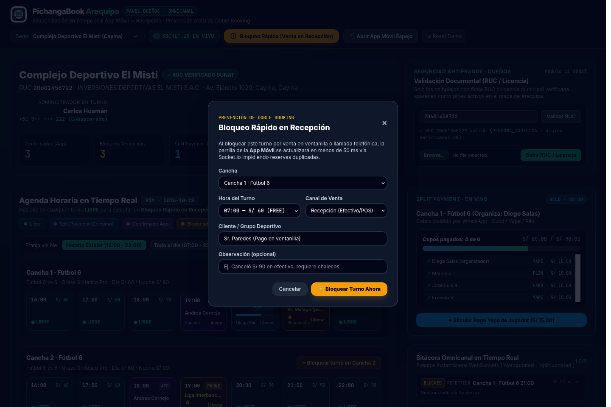 Figura 8: Modal de bloqueo rápido en recepción para ventas presenciales o telefónicas.
|
|
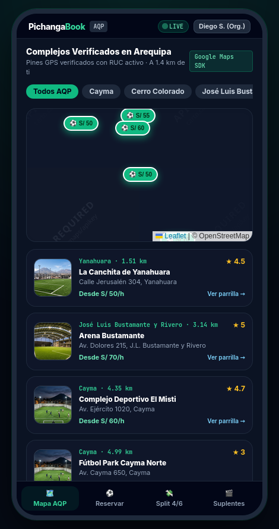 Figura 9: Vista móvil del mapa de Arequipa y complejos filtrados por distrito.
|
La pantalla principal de la app móvil muestra el mapa de Arequipa con pines que indican el precio por hora de cada complejo deportivo y botones superiores para filtrar por distrito (Cayma, Cerro Colorado, Yanahuara y José Luis Bustamante y Rivero).
Al seleccionar un distrito, el frontend consulta |
|
Al elegir un complejo se muestra su fotografía, calificación, pestañas para cambiar entre sus canchas (Cancha 1 Fútbol 6, Cancha 2 Fútbol 6, Cancha 3 Fútbol 8) y las reseñas escritas por otros jugadores.
La parrilla horaria consulta los turnos del día en el backend y se mantiene suscrita por WebSockets: muestra en verde los turnos disponibles, en morado los pagados por app, en azul los que están recolectando pagos divididos ( |
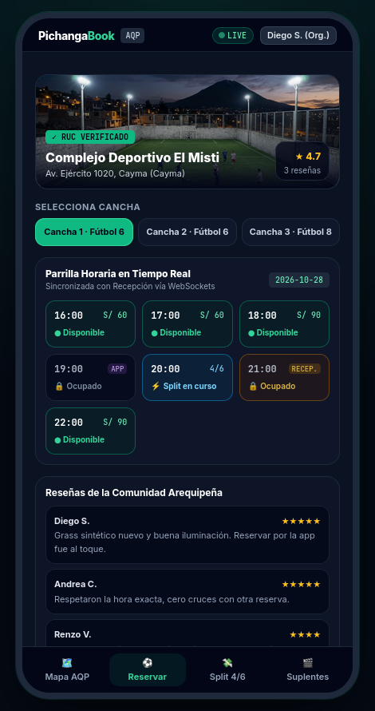 Figura 10: Parrilla horaria sincronizada y reseñas del complejo deportivo.
|
|
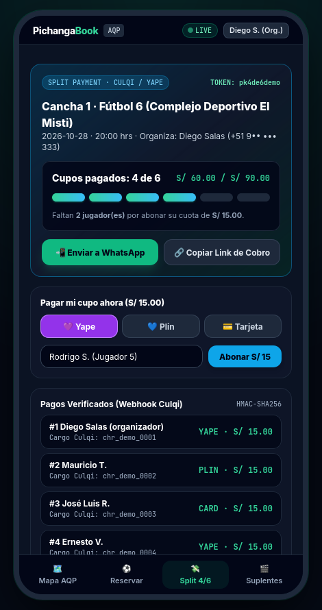 Figura 11: Contador de progreso de pago dividido (4 de 6 cupos pagados).
|
En esta vista el organizador genera un link de cobro fraccionado para compartirlo con su grupo por WhatsApp y sigue en vivo cuántos compañeros ya abonaron su parte (por ejemplo, “Cupos pagados: 4 de 6 — S/ 60.00 / S/ 90.00”).
Cada vez que un jugador abona su cuota de S/ 15.00 eligiendo Yape, Plin o tarjeta, el frontend invoca |
|
La pestaña de bolsa de suplentes permite convocar jugadores de emergencia filtrando por posición en la cancha ( Cada tarjeta incluye un reproductor de video con un clip corto de 15 a 30 segundos para comprobar el nivel técnico del jugador antes de invitarlo, además de mostrar su distrito, su porcentaje de puntualidad, partidos jugados y el botón de convocatoria segura. |
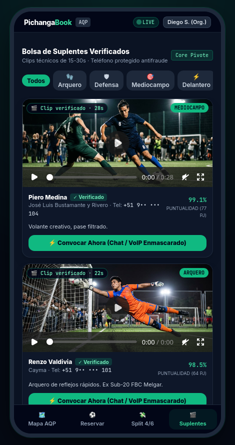 Figura 12: Tarjetas de suplentes verificados con reproductor de video de 15 a 30 s.
|
|
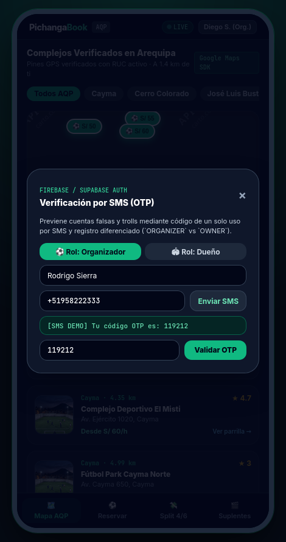 Figura 13: Registro por rol y validación por SMS (OTP).
|
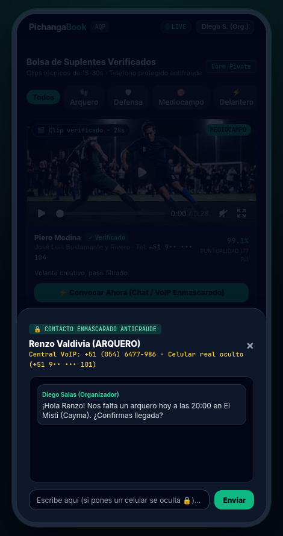 Figura 14: Chat interno con número celular enmascarado.
|
En el módulo de autenticación implementamos el registro diferenciado por rol (Organizador vs. Dueño) validado mediante un código temporal de 6 dígitos por SMS (POST /api/auth/otp/send y /verify) para evitar cuentas falsas. Además, al convocar a un suplente se abre un canal interno de contacto (Figura 14) donde el teléfono personal se muestra siempre enmascarado (+51 9•• ••• 101) y el backend oculta cualquier número celular escrito en los mensajes.
Para la entrega de la próxima semana nos enfocaremos en reemplazar los adaptadores simulados por integraciones en modo de prueba real y cerrar los flujos pendientes entre el backend y la aplicación móvil:
| Área | Tarea programada | Entregable / Evidencia para la próxima semana |
|---|---|---|
| Backend (Pagos) | Integración con el entorno Sandbox real de Culqi / Yape. | Conexión de CulqiService con llaves de prueba reales para procesar abonos del Split Payment y recibir webhooks firmados. |
| Backend y BD | Liberación automática de reservas vencidas (Cron Job). | Tarea programada en NestJS que cambie a EXPIRED los turnos en estado HELD si no completan las 6 cuotas antes de hold_expires_at. |
| Backend y Cloud | Subida de clips cortos de suplentes a Cloudinary. | Endpoint para que un jugador suplente suba su propio video de 15 a 30 segundos validando duración y peso del archivo. |
| Frontend Web | Historial de ingresos y exportación de reportes para dueños. | Vista adicional en el panel web de administración con el resumen semanal de reservas por cancha y descarga en formato CSV. |
| Frontend Móvil | Compilación de APK en Flutter y pruebas en celulares Android. | Generación del archivo instalable APK conectado al backend desplegado en la nube (Render) y pruebas con usuarios locales. |